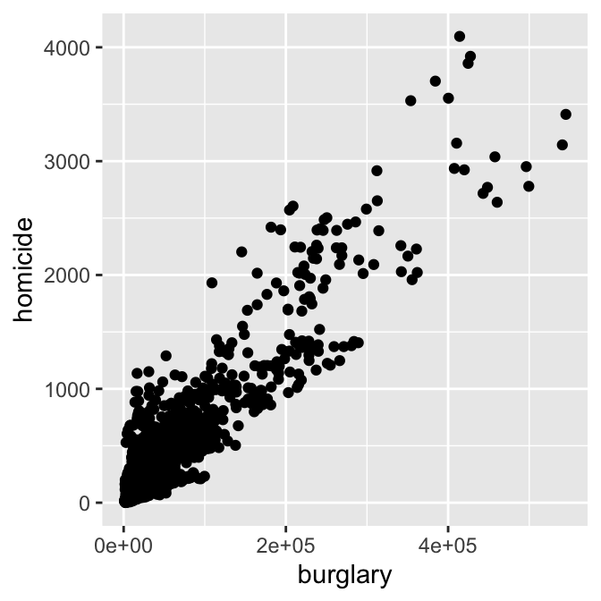
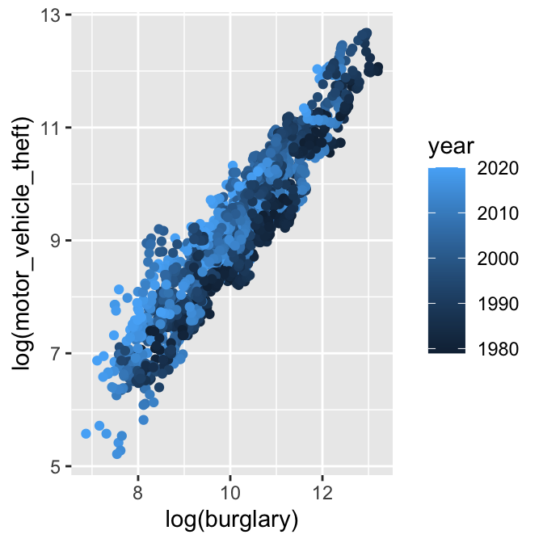

DS 202: Graphics with ggplot2
Yumou Qiu
Data Exploration
- asking good questions is important for any data exploration: “your data won’t speak unless you ask the right questions”
- a data exploration is a cycle of asking questions, looking at the answers, and deriving new questions from them
- for a sound exploration: start by checking individual variables, then move on to higher dimensions
Your turn

Write down questions that you could answer with this data 4 minutes by yourself, then pair up for another 3 minutes, and we’ll write ideas on the board
library(classdata)
head(fbiwide)
## State Abb Year Population Violent.crime Murder Legacy.rape Rape
## 1 Alabama AL 1961 3302000 5564 427 252 NA
## 2 Alabama AL 1962 3358000 5283 316 218 NA
## 3 Alabama AL 1963 3347000 6115 340 192 NA
## 4 Alabama AL 1964 3407000 7260 316 397 NA
## 5 Alabama AL 1965 3462000 6916 395 367 NA
## 6 Alabama AL 1966 3517000 8098 384 341 NA
## Robbery Aggravated.assault Property.crime Burglary Larceny.theft
## 1 630 4255 32541 11205 18801
## 2 754 3995 35829 11722 21306
## 3 828 4755 38521 12614 22874
## 4 992 5555 46290 15898 26713
## 5 992 5162 48215 16398 28115
## 6 1124 6249 53740 18551 30583
## Motor.vehicle.theft
## 1 2535
## 2 2801
## 3 3033
## 4 3679
## 5 3702
## 6 4606
Plan for answers
- Explore how one (or more) variables are distributed: barchart or histogram
- Explore how two variables are related: scatterplot, boxplot, tile plot
- Explore how two variables are related, conditioned on other variables: faceting, color & other aesthetics
We will be using the ggplot2 framework for plotting
Why ggplot2
- Wildly popular package for statistical graphics: over 2.5 million downloads from CRAN in 2017 (several thousand times per day)
- Developed by Hadley Wickham (An ISU Alumni)
- Designed to adhere to good graphical practices
- Constructs plots using the concept of layers
- Supports a wide variety plot types and extensions
- Ported to different languages, e.g.
ggpy
- http://ggplot2.org/book/ or Hadley’s book ggplot2: Elegant Graphics for Data Analysis for reference
ggplot Function
The ggplot function is the basic workhorse of ggplot2
- Produces all plot types available with ggplot2
- Allows for plotting options within the function statement
- Creates an object that can be saved
- Plot layers can be added to modify plot complexity
ggplot Structure
The ggplot function has the basic syntax:
ggplot(data, mappings) + geom_type(options)
- data: dataset to be used
- mappings: determines which variables are connected to which plot elements, mappings are done with
aes()
- type: determines type of the plot, e.g.
point, line, bar
- options: there are so, so many options!
Scatterplots in ggplot2
aes allows us to specify mappings; scatterplots need a mapping for x and a mapping for y:
ggplot(data = fbiwide, aes(x = Burglary, y = Murder)) +
geom_point()

Your turn
- Draw a scatterplot of the number of burglaries by murders.
- Adjust the numbers of the above scatterplot to show log transformed numbers. How can we interpret the numbers on the axes?
- Draw a scatterplot of the log transformed number of burglaries by motor vehicle thefts.
Revision - Interpreting Scatterplots
- Big patterns
- Form and direction
- Strength
- Small patterns
- Deviations from the pattern
Aesthetics
Can map other variables to size, colour, shape, ….
ggplot(aes(x = log(Burglary), y = log(Motor.vehicle.theft),
colour=Year), data=fbiwide) + geom_point()

Your turn
- Draw a scatterplot of the log transformed number of burglaries by motor vehicle thefts. Map the state variable to colour. Why is this a terrible idea?
- Draw a scatterplot of the log transformed number of burglaries by motor vehicle thefts. Map Population to size. How do we interpret the output?
- Which other aesthetics are there? Have a look at the RStudio cheat sheet on visualization
Stretch goal: Draw a histogram of the state populations.
Your turn
- Compare the log transformed number of burglaries by motor vehicle thefts over years. How to make a nice plot?
- Compare the log transformed number of burglaries by motor vehicle thefts over States, coloured by years.
- Now, only focus on comparing California, Colorado, Iowa, Illinois, District of Columbia and New York.
- We all know population is an important factor. How to compare different states by standardized population?